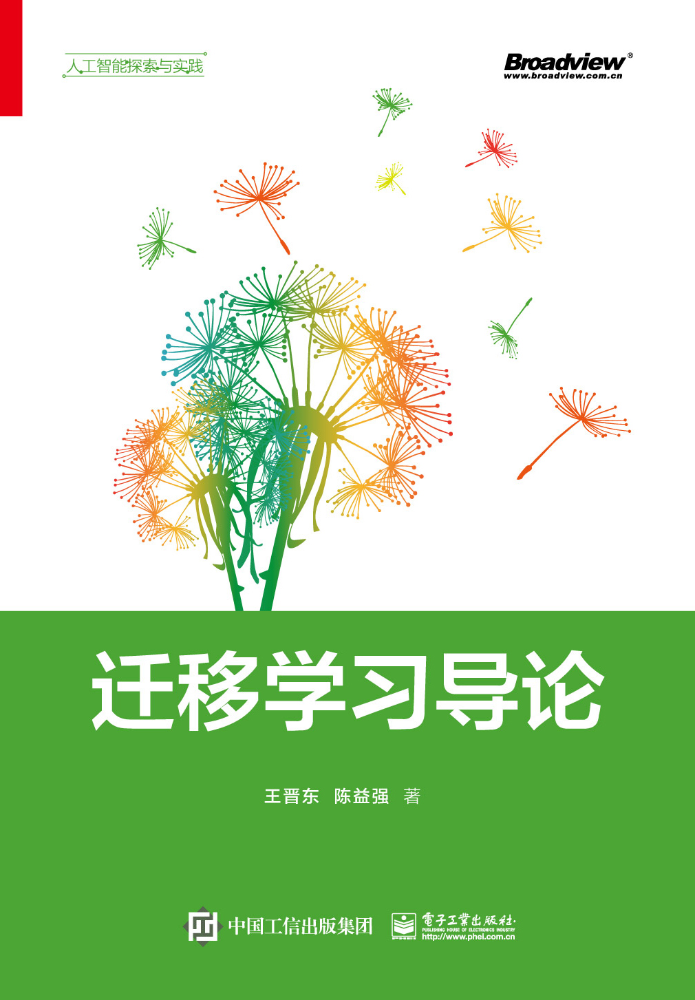
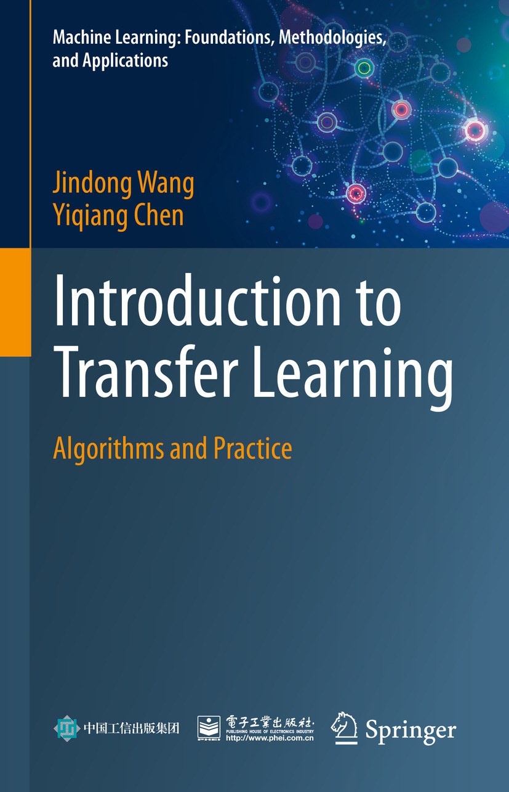
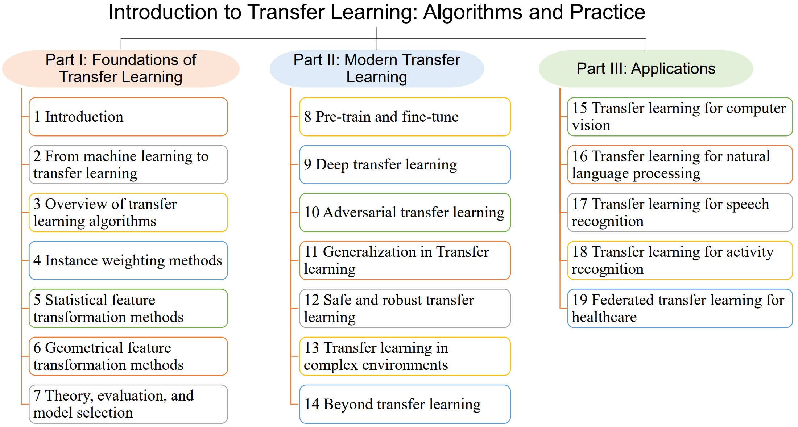
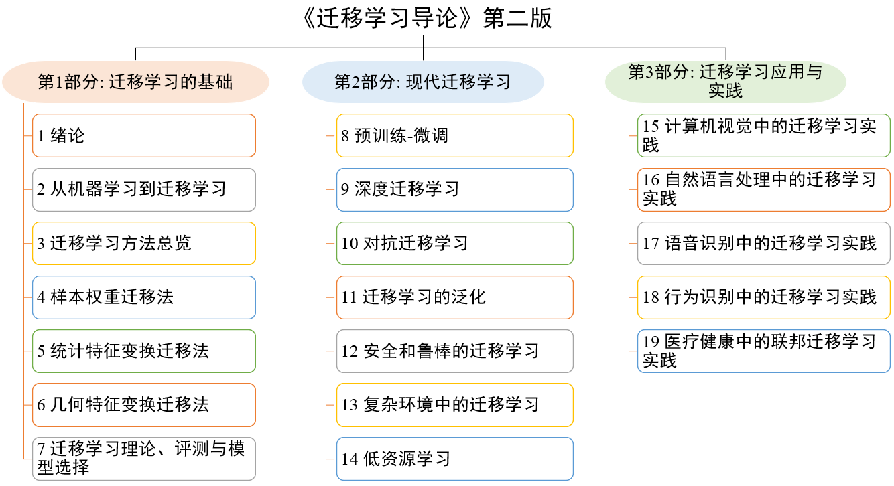

Book
The book Introduction to Transfer Learning written by Jindong Wang and Yiqiang Chen, is publised by Springer Nature in 2023.


English version
@book{tlbook,
author = {Wang, Jindong and Chen, Yiqiang},
title = {Introduction to Transfer Learning: Algorithms and Practice},
year = {2023},
url = {jd92.wang/tlbook},
publisher = {Springer Nature}
}
Introduction
Transfer learning is one of the most important technologies in the era of artificial intelligence and deep learning. It seeks to leverage existing knowledge by transferring it to another, new domain. Over the years, a number of relevant topics have attracted the interest of the research and application community: transfer learning, pre-training and fine-tuning, domain adaptation, domain generalization, and meta-learning.
This book offers a comprehensive tutorial on an overview of transfer learning, introducing new researchers in this area to both classic and more recent algorithms. Most importantly, it takes a “student’s” perspective to introduce all the concepts, theories, algorithms, and applications, allowing readers to quickly and easily enter this area. Accompanying the book, detailed code implementations are provided to better illustrate the core ideas of several important algorithms, presenting good examples for practice.
Structure of this book is as follows. Click HERE for the detailed table of contents. Read or buy it in here.

Code
Accompanying code is on Github: https://github.com/jindongwang/tlbook-code.
Figures
Figures in this book are available in here (access code: a7zmf7). Feel free to use them for your own research.
Suggestions and comments
Plese write your suggestions and feedbacks in this page by opening an issue.
Endorsement
The Chinese version of this book is recommeneded by several well-established scholars such as Qiang Yang, Zhi-Hua Zhou, and many others. Read here for their comments.
Contact and resources
- Personal website: http://jd92.wang
- Video tutorial on Youtube: https://www.youtube.com/channel/UCae3q_-nAl829Qw9PVE4h1Q
- Github repo: https://github.com/jindongwang/transferlearning
中文版
@book{tlbookchinese,
author = {王晋东 and 陈益强},
title = {迁移学习导论},
year = {2021},
url = {jd92.wang/tlbook}
}
介绍
[知乎专栏文章介绍] [购买第二版(NEW!!!)] [第一版]

代码
- 第二版代码：https://github.com/jindongwang/tlbook-code.
- 第一版书中的所有代码，以及其他方法的代码可以在这里找到。
配图
我们免费开源了书里所有的插图以帮助你的研究：[PPT源文件下载地址] (访问密码 : n99k7d) [Google docs地址]
疑问、建议和意见
请到Github的这个页面开一个issue以描述你的问题。
专家推荐意见
-
迁移学习旨在利用已有的数据、模型和知识，通过领域相似性和“举一反三”的联想能力，把学到的通用知识适配到新的领域、场景和任务上，它使机器学习拥有更强大的泛化能力。本书作者长期和我的实验室合作，积累了丰富的科研经验，多年来辛勤地在大众媒体上普及迁移学习的相关知识。在本书中，他们保持了一贯的简明通透的写作风格，用贴近学生群体的语言，将迁移学习的发展历史、基础知识和最新进展娓娓道来。同时，本书配有用于实践的源码和数据集，增加了动手练习的环节，提高了趣味性。作为长期耕耘在迁移学习这一人工智能领域的学者和业界首本迁移学习著作（《迁移学习》）的作者，我强力推荐这本书给有志于从事迁移学习研究的同学，更快地入门和学习！———杨强 微众银行首席人工智能官、香港科技大学讲席教授，ACM/AAAI/IEEE Fellow
-
迁移学习是机器学习的一个重要研究分支，有广泛的应用价值。该书叙述简洁明了、内容丰富详实，对希望了解并应用迁移学习的读者很有帮助！———周志华 南京大学教授，ACM/AAAI/IEEE Fellow
-
迁移学习对于增强训练模型的适应性具有重要意义，受到很多学者的关注。这本书深入浅出、系统性地介绍了主要的迁移学习方法，并结合多个领域的应用进行示例分析，为从事相关技术的研究人员提供了非常有益的参考。———陶建华博士 中国科学院自动化研究所研究员，模式识别国家重点实验室副主任
-
迁移学习的核心思想中国早已有之，如《周易》云：“引而伸之，触类而长之，天下之能事毕矣也”。如今，迁移学习已成为人工智能的一项核心技术，在迁移学习导论计算机视觉、自然语言语音处理、强化学习中得到了广泛的应用。本书语言简洁、内容丰富，相信可以启发读者举一反三、触类旁通，更好地解决手头的问题。———秦涛博士 微软亚洲研究院首席研究经理，中国科技大学兼职教授
-
迁移学习是机器学习的一个重要领域。在计算机视觉，自然语言处理，语音识别，推荐系统等领域有非常广泛的应用。陈益强和王晋东两位老师通俗易懂地介绍了迁移学习的来龙去脉——不仅涵盖了基本的理论脉络、具体的方法和技术，还介绍了广泛的应用案例和未来的发展方向和前沿问题，为人工智能初学者提供了一份难得的、快速入门的学习和研究资料。———汪军 伦敦大学学院计算机教授
-
迁移学习，借用了面向对象编程的概念（模型层面的继承）、是对已训练得到的机器学习模型的高效重用，能很大程度避免资源的重复消耗，是大模型民主化的重要途径之一。本书详细介绍了迁移学习的概念和技术及最新的预训练、知识蒸馏、元学习等研究方向，内容上可谓面面俱到。除此之外，本书的一大亮点，是对“两头”的把握：一是源头，抓问题和场景，做到“师出有名”，讲清楚针对什么问题、用在哪里；二是笔头，抓代码与实践，做到“落地结果”，在实战中巩固和深化对技术的理解。相信这本书能带给读者思考与实践的双重乐趣，在算力爆炸的时代反思机器学习的高效之道！———陈光 北京邮电大学副教授，新浪微博 @ 爱可可–爱生活
致谢
- 内容撰写：感谢微软亚洲研究院研究员刘畅博士协助撰写“基于因果关系的迁移学习”一节、南京大学博士生杜云涛协助撰写“迁移学习理论”和“在线迁移学习”两节、中科院计算所博士生朱勇椿协助撰写“多源迁移学习”一节。
- 全书修改意见：感谢微众银行首席人工智能官、香港科技大学讲席教授杨强教授、南京大学周志华教授、微软亚洲研究院首席研究经理秦涛博士、新加坡国立大学的 Research Fellow 冯文杰博士、西安电子科技大学的段然博士、大连理工大学的博士生王维，以及中科院计算所博士生秦欣、卢旺、于超辉（现任阿里巴巴达摩院算法工程师）提供的宝贵修改意见。
- 感谢出版社提供的专业出版意见和支持。
- 最后，在撰写本书的过程中，笔者得到了家人的大力鼓励和支持，在此特别表示深深的谢意。
疑问解答与勘误
这个帖子里汇总了目前已知的对本书的疑问与勘误。
联系方式
- 个人主页：http://jd92.wang
- 知乎：王晋东不在家
- 微信公众号：王晋东不在家
- B站：王晋东不在家
- Github: jindongwang
- 微博：秦汉日记